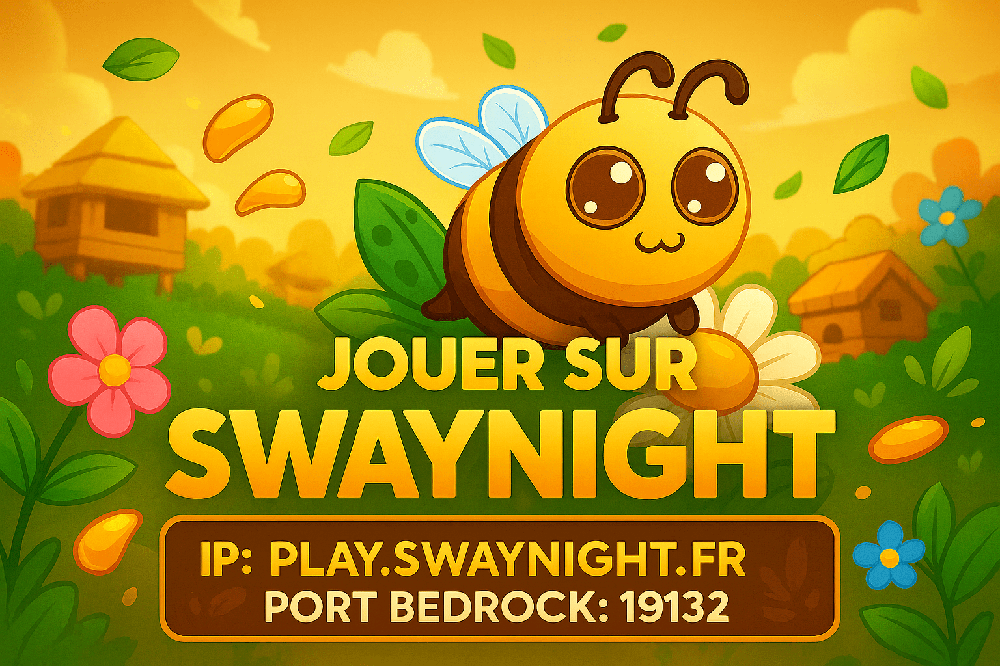

Économie
Une monnaie stable, des récompenses utiles et une vraie progression sur le long terme.

L'aventure Minecraft commence ici. Explore un serveur moderne axé sur l'économie, les métiers, les quêtes, les guildes et un univers forestier pensé comme un vrai monde vivant.
Une identité forêt premium, des fonctionnalités communautaires fortes et une architecture prête pour le temps réel.
Une monnaie stable, des récompenses utiles et une vraie progression sur le long terme.
Débloque des spécialisations, des bonus et des voies d'évolution liées à ton style de jeu.
Des objectifs journaliers et des arcs scénarisés pour guider les nouveaux comme les vétérans.
Crée ton groupe, défends ton territoire et grimpe dans les classements communautaires.
Achète, revend et surveille les meilleures opportunités sur une économie pilotée par les joueurs.
Mets aux enchères tes trouvailles rares et développe ta réputation de marchand.
Boss, tournois, marchés spéciaux et animations régulières pour relancer le serveur chaque semaine.
Particules, badges, titres et apparences pour personnaliser ton identité sans casser l'équilibre.
Compare ta richesse, ton temps de jeu, tes votes, tes quêtes et tes performances de guilde.
Un univers jungle et forêt, dense, lisible et immersif, prêt à accueillir des extensions futures.
Vote chaque jour pour booster la visibilité d'ARKOS et récupérer de la monnaie, des clés et des récompenses exclusives.
Monnaie, points boutique, tickets de caisse et bonus temporaires.
Des récompenses mensuelles pour les joueurs les plus réguliers.
Le site affiche les plateformes de vote et prépare le crédit automatique via le backend.

Une nouvelle aventure ARKOS débute avec un spawn forestier, une économie revue et des quêtes inédites.
LireMarchands, commandes et progression métiers prennent place dans une nouvelle zone immersive.
LireMaintenance, notifications, logs et boutique seront pilotables depuis une interface dédiée.
DécouvrirAffrontez un boss coopératif dans la jungle et récupérez des reliques rares.
06 septembre 2026 — 20:30
Récompenses : Clé exotique, 25 000 ⛃, cosmétique exclusif
Des vendeurs temporaires proposent des objets rares pendant une durée limitée.
10 septembre 2026 — 19:00
Récompenses : Objets spéciaux, matériaux rares, boosts métiers
Combattez, capturez des objectifs et dominez le classement communautaire.
14 septembre 2026 — 18:00
Récompenses : Titre de guilde, coffre premium, points de saison
Grades, clés, cosmétiques, kits, monnaie et packs sont prêts à être gérés depuis l'administration.
VIP, VIP+, MVP, MVP+, Titan et Staff.
Particules, badges, titres et personnalisations visuelles.
Offres premium prêtes pour Tebex ou CraftingStore.
Le portail ARKOS est pensé pour Docker, Cloudflare Tunnel, une base SQLite migrable vers PostgreSQL et une connexion sécurisée au serveur Minecraft.